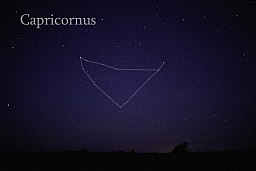

염소자리
Capricorn (♑︎) is the tenth astrological sign in the zodiac out of twelve total zodiac signs, originating from the constellation of Capricornus, the goat.[2] It spans the 270–300th degree of the zodiac, corresponding to celestial longitude. Under the tropical zodiac, the sun transits this area from about December 22 to January 19.[2] In astrology, Capricorn is considered an earth sign, negative sign,[3][4] and one of the four cardinal signs. Capricorn is said to be ruled by the planet Saturn.